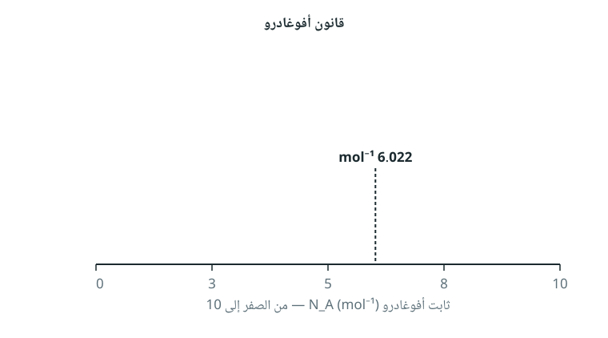

قانون أفوغادرو
Avogadro's law
قانون أفوغادرو ينص على أن أحجاماً متساوية من الغازات عند الضغط ودرجة الحرارة نفسيهما تحتوي عدداً متساوياً من الجزيئات، ومنه الحجم المولي 22.414 L/mol عند الظروف القياسية.
قانون أفوغادرو ينص على أن أحجاماً متساوية من غازات مختلفة، عند الضغط ودرجة الحرارة نفسيهما، تحتوي عدداً متساوياً من الجزيئات. صياغته الحديثة أن حجم الغاز يتناسب طردياً مع كمية مادته عند ثبات الضغط ودرجة الحرارة: V = k·n، حيث n عدد المولات. النتيجة العملية أن الحجم المولي للغاز المثالي لا يعتمد على نوع الغاز، بل على الضغط ودرجة الحرارة وحدهما. عند الظروف القياسية (0 °م و101 325 Pa) يساوي الحجم المولي 22.414 L/mol، وعند 25 °م و101 325 Pa يساوي 24.465 L/mol. مثال: 0.500 مول من أي غاز مثالي تشغل 11.207 L عند الظروف القياسية، سواء كان الغاز نيتروجين أو أكسجين أو ثاني أكسيد الكربون، ما دام سلوكه قريباً من المثالية.
كيف تعمل الظاهرة؟
القانون يُشتق من النظرية الحركية للغازات: الضغط ينشأ من تصادم الجزيئات بالجدار، وعدد التصادمات في وحدة الزمن يتناسب مع عدد الجزيئات في وحدة الحجم ومع سرعتها المتوسطة. وعندما يُثبَّت الضغط ودرجة الحرارة، تُثبَّت السرعة المتوسطة، فيبقى عدد الجزيئات في وحدة الحجم ثابتاً. ومن ثبات الكثافة العددية N/V ينتج مباشرة أن V يتناسب مع N، أي مع n. هذا هو جوهر القانون: الحجم ليس وعاءً تُصبّ فيه الجزيئات بل متغيّر يُضبط ليبقي معدل التصادم على الجدار — أي الضغط — ثابتاً عند سرعة جزيئية معطاة. ولذلك لا يظهر نوع الغاز في العلاقة: كتلة الجزيء تؤثر في سرعته عند درجة حرارة معينة، لكن الضغط يعوّض ذلك بالعدد لا بالكتلة.
العلاقة بالأرقام
V = k·n عند ثبات p وT، وk = V_m = RT/p. وبالوحدات: R = 8.314 462 618 J·mol⁻¹·K⁻¹، وp بالباسكال، فيخرج V_m بالمتر المكعب لكل مول. عند 273.15 K و101 325 Pa: V_m = 8.314 462 618 × 273.15 / 101 325 = 0.0224139 m³/mol = 22.414 L/mol. وعند 298.15 K: V_m = 24.465 L/mol. والعلاقة بالكثافة: ρ = pM/(RT)، فالكثافة تعتمد على الكتلة المولية M بينما الحجم المولي لا يعتمد عليها. مثال عددي: 0.500 مول عند 273.15 K و101 325 Pa → V = 0.500 × 22.414 = 11.207 L.
مفاهيم متقاربة
يُخلط قانون أفوغادرو كثيراً بقانون الغاز المثالي العام pV = nRT. الفرق أن قانون أفوغادرو حالة مقيدة: p وT ثابتان، والعلاقة بين V وn فقط. وقانون الغاز المثالي يشمل أربعة متغيرات ويسمح بتغيّر أي منها. ويُخلط أيضاً بقانون بويل (V ∝ 1/p عند ثبات T وn) وقانون شارل (V ∝ T عند ثبات p وn)؛ وكلها حالات خاصة من المعادلة العامة، لكن كل قانون يسمّي المتغير الذي يثبته. والتمييز العملي: قانون أفوغادرو هو الوحيد الذي يجعل الحجم المولي مستقلاً عن هوية الغاز، وهو ما يبرر استعمال 22.414 L/mol لكل الغازات المثالية بلا استثناء.
حدود التطبيق
القانون صالح للغازات المثالية، أي عند ضغوط منخفضة ودرجات حرارة بعيدة عن التكثّف. عند الضغوط العالية تقلّ المسافات بين الجزيئات فيصبح حجم الجزيئات نفسها جزءاً غير مهمَل من الحجم الكلي، وينحرف السلوك عن المثالية؛ ويُصحَّح بمعامل الانضغاطية Z حيث V_m = ZRT/p. والانحراف يظهر بقوة قرب نقطة التكثّف، كما في بخار الماء عند 100 °م حيث Z أقل من الواحد. كذلك لا ينطبق القانون على المحاليل السائلة ولا على المواد الصلبة، لأن الحجم فيها تحدده كثافة التعبئة لا عدد الجزيئات. وأخيراً لا يقول القانون شيئاً عن نوع الجزيئات ولا عن تفاعلها، فخليط يتفاعل كيميائياً يتغير فيه n نفسه.

| الكمية | القيمة | المصدر |
|---|---|---|
| ثابت الغاز المولي R | 8.314 462 618 J·mol⁻¹·K⁻¹ | [3] |
| الحجم المولي عند 0 °م و101 325 Pa | 22.414 L/mol | [3] |
المصادر
- 1 The International System of Units (SI), 9th edition (2019) — BIPM — Bureau International des Poids et Mesures (2019). www.bipm.org/en/publications/si-brochure · اطُّلع عليه 2026-11-21
- 2 CODATA Value: Avogadro constant — NIST — CODATA 2022 recommended values (2024). physics.nist.gov/cgi-bin/cuu/Value?na · اطُّلع عليه 2026-11-21
- 3 CODATA Value: molar gas constant — NIST — CODATA 2022 recommended values (2024). physics.nist.gov/cgi-bin/cuu/Value?r · اطُّلع عليه 2026-11-21
استشهد بهذا المصطلح
الصيغتان مبنيتان من بيانات الصفحة نفسها: العنوان والتاريخ ورابط النسخة المنشورة.
قانون أفوغادرو — Avogadro's law. (2026). ديوان المعرفة — انفراد. https://infiradev.com/diwan/terms/term-avogadro-law.html
@misc{term-avogadro-law2026,
title = {قانون أفوغادرو},
titleaddon = {Avogadro's law},
howpublished = {{ديوان المعرفة — انفراد} — مرجع علمي عربي},
year = {2026},
url = {https://infiradev.com/diwan/terms/term-avogadro-law.html},
urldate = {2026-11-26},
note = {مراجعة علمية: hermes (مراجعة معتمدة 2026-11-26)}
}
راجعه: hermes (مراجعة معتمدة 2026-11-26) · 2026-11-26 · آخر تحديث 2026-11-21